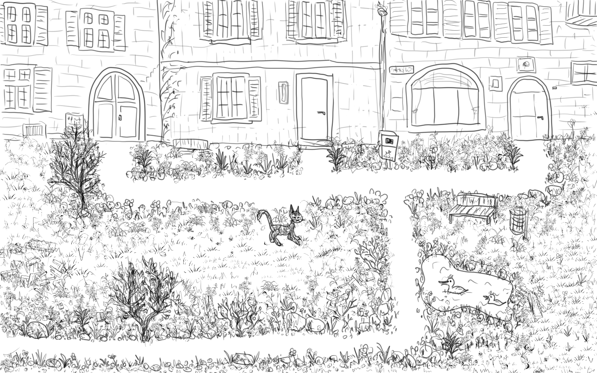
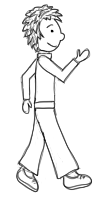
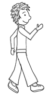
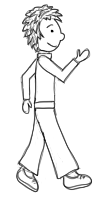
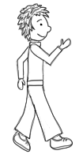
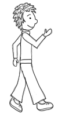

Hilfe
Zurück

Wie kannst du Ruth bewegen? War da nicht ein Hinweis im Nationalratssaal versteckt?
Zurück
Bild sehen
8
Dein Browser unterstützt das audio-Tag nicht. Du kannst diese Station aber auch ohne Musik spielen. Oder möchtest du eine aktuellere Browser-Version installieren?
Dein Browser untersützt das audio-Tag nicht. Du kannst diese Station aber auch ohne Musik spielen. Oder möchtest du eine aktuellere Browser-Version installieren?
 


